15h — 20/11
Canal180 HQ
Breaking into Digital Independence through habit and film
with Steven Rice MacKay, Arroz Estúdios
Four days in Porto with the people who still make time for the single take, the session on film, the radio show built by hand.
180 Media Academy invites creative professionals from different media sectors to share their vision on their practice, the industry they belong to, the world around them, and where we are headed next.
This year we look at formats that ask for more time, and at the independent platforms keeping them alive while everything else speeds up.
15h · Talk
Steven Rice MacKay — Arroz Estúdios
Canal180 HQ
17h · Screening + Q&A
Cinema Passos Manuel
18h · Talk
Christophe Abric — La Blogothèque
High Life – Cinema Batalha
19h · Happy Hour
High Life – Cinema Batalha
21h · Exhibition Opening + Q&A
Pedro Melo Alves
Canal180 HQ
13h · Meet & Greet
Maus Hábitos
15h · Screening + Q&A
Christophe Abric
Cinema Passos Manuel
17h · Screening + Q&A
Cinema Passos Manuel
18h · Talk
Rasmus Stolberg — Brodie Sessions
High Life – Cinema Batalha
19h · Happy Hour
High Life – Cinema Batalha
15h · Screening + Q&A
Rasmus Stolberg
Cinema Passos Manuel
17h · Screening + Q&A
Cinema Passos Manuel
18h · Talk
TBD
High Life – Cinema Batalha
19h · Happy Hour
High Life – Cinema Batalha
20h · Broadcast
Guillaume Cailleau and Ben Russell
Canal180 – on TV
11h · Workshop
Luís Oliveira
Radio Jardim @ Canal180 HQ
17h · Radio Broadcast
Radio Jardim @ Canal180 HQ
Come watch it live!
18h · Radio Broadcast
Radio Jardim @ Canal180 HQ
Come watch it live!
19h · Radio Broadcast
Radio Jardim @ Canal180 HQ
Come watch it live!
15h — 20/11
Canal180 HQ
with Steven Rice MacKay, Arroz Estúdios
18h — 20/11
High Life – Cinema Batalha
with Christophe Abric, La Blogothèque
A conversation about instinct, preparation and spontaneity in directing single-take performances, and finding the balance between cinematic control and the unpredictable energy of a live moment.
18h — 21/11
High Life – Cinema Batalha
with Rasmus Stolberg, Brodie Sessions
From production constraints to cinematographic choices, how do you translate the energy and spontaneity of a musical performance into a cinematic experience?
15h — 21/11
Cinema Passos Manuel
+ Q&A with Christophe Abric
A selection of the Paris-born Take Away Shows: musicians filmed in one take, in places that were never meant to be stages. Q&A with filmmaker Christophe Abric at the end.
15h — 22/11
Cinema Passos Manuel
+ Q&A with Rasmus Stolberg
Intimate live sessions from the Danish music platform that shoots on analogue film, with artists performing in unique architectural spaces. Q&A with producer Rasmus Stolberg at the end.
17h — 20, 21 and 22/11
Cinema Passos Manuel
+ Q&A with Cinema Novo directors
Cinema Novo Competition brings together short films by young filmmakers and students, reflecting the vitality of today’s film schools. A programme that bets on new voices, perspectives and forms, with the support of Canal180.
#01 · Fri 20/11, 17h
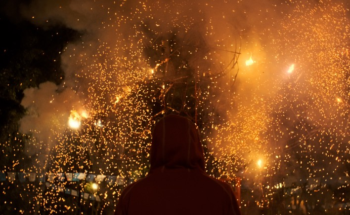
Antes que nos EsqueçamBefore We Fade AwayOn the night of the Mexican football league final, a group of friends roam the streets of Mexico City one last time. Between graffiti, robberies and police chases, the city they know becomes a territory of farewell. Over the course of the night, their friendship and the spaces they share are put to the test, in an urban odyssey that becomes a love letter to a city about to be left behind. — Sebastian Molina Ruiz, 2026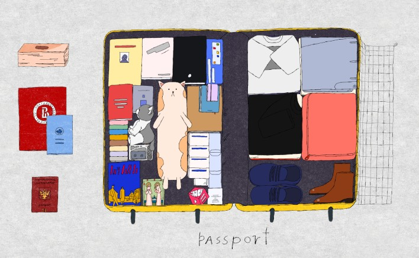
coisas que fui juntandothings that I was gatheringIn this autobiographical animated documentary, the narrator gathers books, stuffed toys and food for friends detained for protesting against the war. The gesture repeats until the list seems endless. As political repression grows, gathering objects turns into preparing for her own departure. A reflection on war, exile, guilt and the intimate cost of resistance. — Ekaterina Zhuzhleva, 2025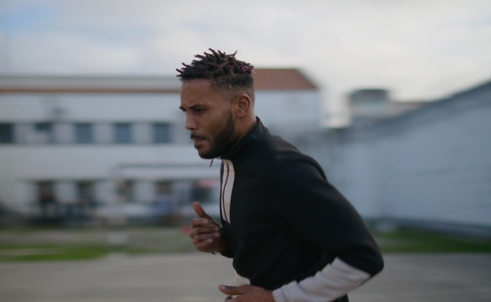
HomemManWithin the walls of a prison, a group of inmates write scenes about a “Man”. As they give body to the words, the cells turn into childhood landscapes, hospital rooms and places flooded with light from outside. As the story unfolds, the line between imagination and reality grows ever more blurred, leaving the identity of that “Man” open. — Fábio Zilberman Iuchno, 2025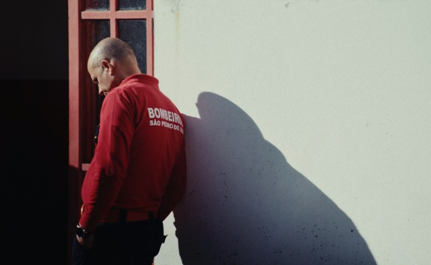
BrasasEmbersA year after a fire devastated inland Portugal, “Brasas” follows a fire station in suspension and a mountain village where life revolves around the chestnut harvest. Between landscape, work and memory, the film observes what remains after disaster: traces of the fire, the fragility of life and the persistence of those who stay. Beneath the routine, the embers hold the risk of burning again. — Baltazar Mello, 2026#02 · Sat 21/11, 17h
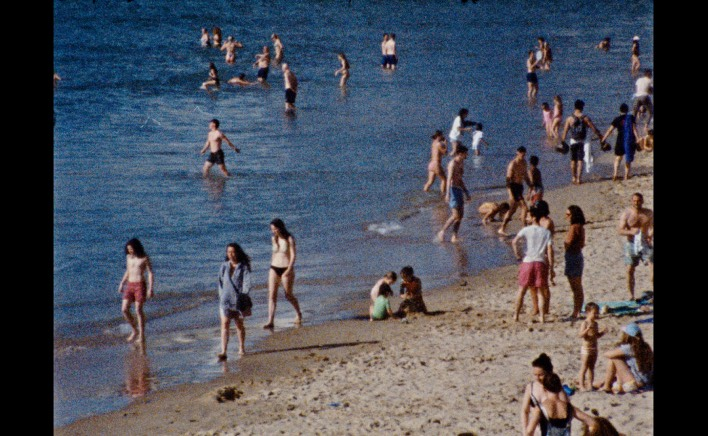
OFrancisca lives with an uncontrollable aversion to belly buttons and similar shapes. What seems an ordinary part of the body causes her deep anxiety. When therapy is not enough, she turns to methods with no scientific basis in search of relief. Shot on 16mm, the film turns this phobia into a reflection on uncertainty and the wish to heal. — Francisca Alarcão, 2026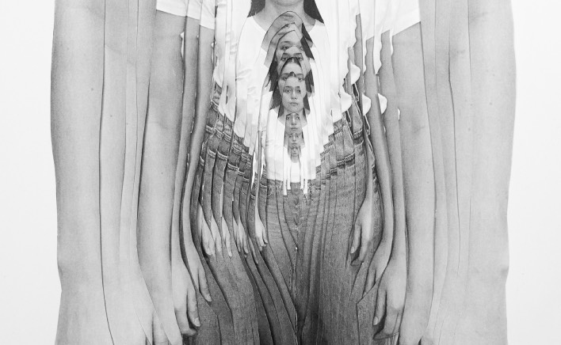
um corpo sem cavalo?a body without a horse?“um corpo sem cavalo?” follows a body searching for identification, among voids, absences and unstable forms. Through animation, drawing and movement, Lara Fuke builds a poetic reflection on the body and transformation, where it can be human, fable, technology or image. What is missing becomes a field of movement and of self-recognition. — Lara Fuke, 2026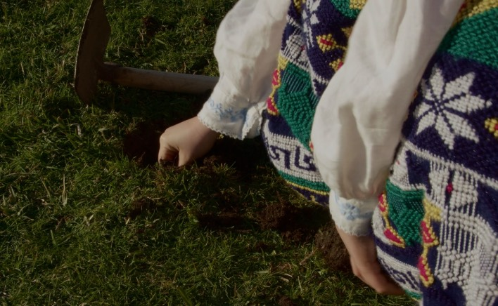
Tudo Voltaria Menos EuAll Would Return But Me“Tudo Voltaria Menos Eu” sets out to recover the memory of a long-forgotten poet. From the fragments that remain, the film follows the path of a returnee and the uncertain movement between departure and return. As personal memory meets the gaps in the archive, the film reflects on absence, remembrance and the fragile possibility of rebuilding a life from what has survived. — Nina Eli, 2026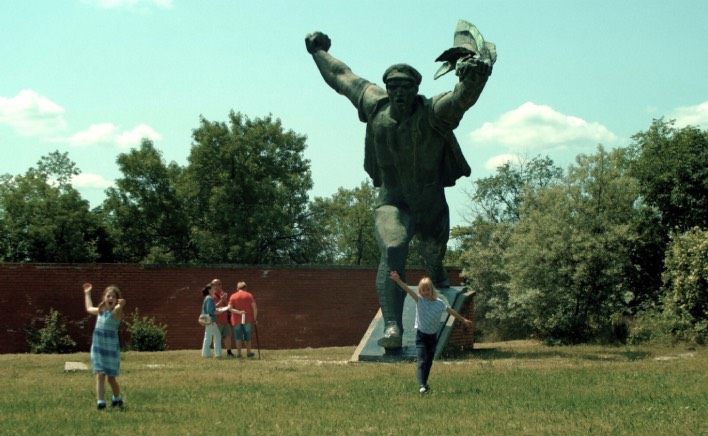
As Estátuas Também Morrem?Statues Also Die?The weight of history grows light in children’s hands. In a park in Budapest, a group of kids become a team of interviewers among huge communist statues that have found their final resting place there. Their questions awaken forgotten echoes and, through playful editing, the film fits the scale of a country’s past and present into that space. — Thais Fernandes, 2025#03 · Sun 22/11, 17h
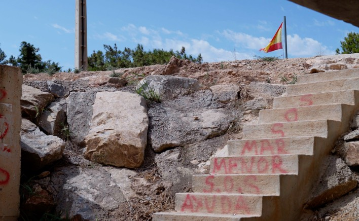
Environmelisma“Environmelisma” grows out of research into three interconnected extractive processes in Murcia: mining in La Unión, construction in La Manga and agribusiness around the Mar Menor. Structured as a spiral, the film revisits these places, combining archive material with new footage. Through sound, texture and landscape, it seeks to capture the ecological trauma inscribed in the territory. — Lorenzo Sandoval, Pedro André, 2025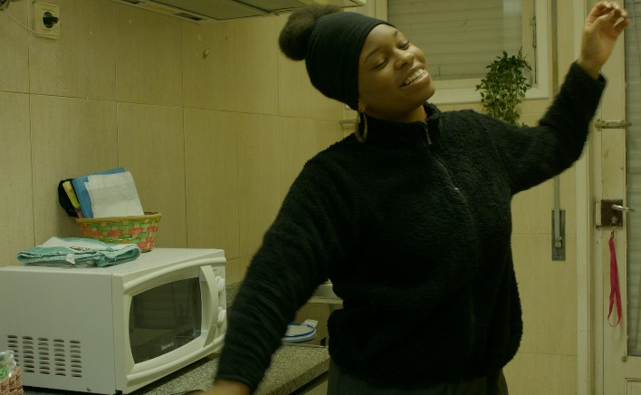
MileneMilene, a 28-year-old Angolan woman, has been living in Portugal for a year. By day she cares for an elderly woman; by night she cleans a shopping centre. Between exhausting routines, bureaucratic and social obstacles, loneliness and longing for what she left behind, she tries to build a new life without losing her dignity, holding on to small gestures of hope and the possibility of a lighter future. — Francisco Fonseca Cândido, 2026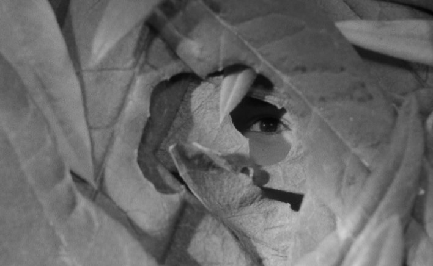
O Leite das MonarcasThe Milk of MonarchsAn experimental documentary built from Super 8 and digital footage, family memory and myth. A little boy hears a secret whispered among the grass and sets out to discover its meaning. Around him, seemingly still images come to life and reveal a story never recorded: the forbidden desire of a monarch. The film brings together trauma, memory and metamorphosis. — Francisco Nuno Rodrigues, 2025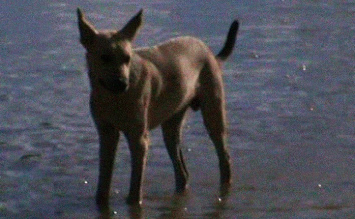
Eu não sei sobre muita coisaI Don’t Know Much About AnythingA filmmaker travels across north-east Brazil, from Tremedal in Bahia to Enseada Grande in Maranhão, looking for traces that might help rebuild the fragmented memories of her origins. Along the way, places, people, photographs and archive images reveal the erased histories of a marginalised people. The search for her ancestors becomes a reflection on identity, memory and belonging. — Rebecca Moreno, 202511h—13h — 23/11
Canal180 HQ
with Luís Oliveira
Descoberta musical, o papel da rádio, algoritmos, curadoria e a capacidade de surpreender quem ouve.
20h — 22/11
Canal180 – on TV
by Guillaume Cailleau and Ben Russell
The title refers to a protest tactic that aims to achieve results by the most effective means. A portrait of an important community in France, which brings together activists, anarchists, farmers and people considered eco-terrorists by the French government. This community has already survived several onslaughts that would have wiped it out, and has even created a movement focused on climate change. The film delves into the heart of the people who make up the community.
17h — 23/11
Rádio Jardim @ Canal180 HQ
Come watch it live!
with Miguel Mesquita, Badlands / Cinema Passos Manuel
and Diego Delgado, Octubre.tv
moderated by Canal180
18h — 23/11
Rádio Jardim @ Canal180 HQ
Come watch it live!
A collective of musicians tied to Porto’s experimental scene and its more underground circuit.
19h — 23/11
Rádio Jardim @ Canal180 HQ
Come watch it live!
A French DJ based in Porto who has worked with stations such as Radio Relativa (Madrid) and LYL Radio (Lyon), bringing a wider perspective on independent and community radio in Europe.
Every day — 20/11 to 17/01
9:16 Digital Gallery
Opening + Q&A — 21h, 20/11
with Pedro Melo Alves
Ξ||||||Ξ (read “imm”) is a transdisciplinary sensory narrative by composer Pedro Melo Alves, at the intersection of music, techno-performance and digital arts. Questioning the threads that link high culture, mainstream pop and urban movements to their ancestral roots, the work presents itself as an open stage for contemporary ontological debate and for transhumanist and posthumanist inquiry.
For 180 Media Academy, an exhibition version of the piece will be shown on the 9:16 Digital Gallery, every day from 20 November to 17 January.
The exhibition opens on Friday 20 November at 21h, followed by a Q&A with Pedro Melo Alves.
Talks and happy hours, at High Life
Porto’s historic cinema. Film screenings began in 1906 at the Salão High-Life, which moved to Praça da Batalha in 1908; the building was restored and reopened in December 2022 as Batalha Centro de Cinema. Our talks and happy hours take place at High Life, its bar.
Screenings
A small cinema inside the Coliseu do Porto building, on the site of the old Salão Jardim Passos Manuel. Its Cine-Estúdio opened in 1971, devoted to independent and auteur cinema, and today it is also a bar and dance floor and a regular home for the city’s film festivals, Porto/Post/Doc among them.
Talk, workshop, Radio Jardim and exhibition
Canal180’s home in Porto, on Rua de Miguel Bombarda. It hosts the opening talk, the workshop, the Radio Jardim walk-in broadcasts and the Ξ||||||Ξ exhibition.
Founder, La Blogothèque
Christophe “Chryde” Abric started La Blogothèque as a music blog in 2003. In 2006, with filmmaker Vincent Moon, he created the Take Away Shows: improvised performances filmed in unexpected locations and shared freely online. Over a thousand films later, the format has shaped how music is filmed for the web.
Producer, Brodie Sessions
Rasmus Stolberg is a producer at Brodie Sessions, the independent, non-commercial Danish platform that films live sessions on analogue film. He is also a founding member of the Copenhagen band Efterklang.
Founder, Arroz Estudios
Steven Rice MacKay founded Arroz Estudios, a cultural association and artist residency in Lisbon’s Beato district. A DJ and record collector, he ran parties and programmed venues in the UK before moving to Lisbon.
Percussionist and composer
Born in Porto in 1991, Pedro Melo Alves is a drummer and composer from Portugal’s avant-garde music scene, known for his research into the sonic possibilities of materials and his work across disciplines.
Founder, Octubre.tv
Diego Delgado founded and directs OCTUBRE.TV, an independent audiovisual archive that began in Barcelona in 2012, continued in Berlin, and now operates from Porto. It brings together music films made in collaboration with artists, from carefully produced sessions to live performances, festival recordings, interviews, short documentaries, music videos and DJ sets. In 2018 the project expanded with OCTUBRE.TV Ediciones, an independent label releasing cassettes, vinyl and digital music.
Badlands / Cinema Passos Manuel
Miguel Mesquita is the new head of Cinema Passos Manuel in Porto. He holds a master’s degree in Cinema from Universidade Católica Portuguesa and has built his path in cultural production and programming. He is one of the founders of BADLANDS, a project exploring the intersection of music and cinema, with a programme of film screenings and live music performances.
Radio host and deputy director, Antena 3
Luís Oliveira is a radio host and deputy director of Antena 3, where he has been on air for more than a decade. He presents Defeitos Especiais on weeknights and Domingo no Mundo on Sundays, and is a regular voice in the station’s live specials, including a programme marking the centenary of Miles Davis.
180 Media Academy invites creative professionals from different media sectors to share their vision on their practice, the industry they belong to, the world around them, and where we are headed next.
How do we observe, interpret, and communicate the world around us? How do the tools and formats we use shape the stories we tell?
The goal of this program is also to offer a transdisciplinary and comprehensive perspective for discussing new themes, discourses, and trends that are shaping the world.
180 Media Academy takes place in Porto between the 20 and 23 November 2026.
Canal180 is an independent media platform based in Porto, Portugal, dedicated to creativity and culture.
Founded in 2011 as a groundbreaking TV channel, it has evolved into a space where filmmakers, musicians, designers, photographers, and artists of all kinds share how they see, think, and create. Through original documentaries, interviews, and experimental audiovisual projects and events we explore the creative process and the ideas shaping culture today.